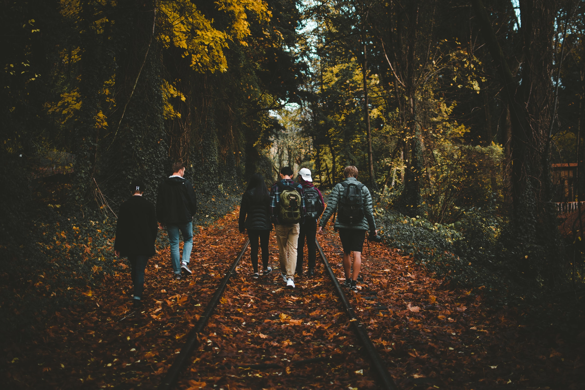

Powered by Java & Android
One of my most fulfilling projects was developing a mobile app for a charity with 3 other developers. The charity wanted a mobile app that allowed school children in Uganda and northern India to form walking groups and safely travel to school. The children would face danger from criminals and they had no access to public transportation. The goal was to provide these children the ability to form walking groups and safely arrive at school. Parents can track their children's location in real-time and permit an adult to become a walking group leader.
I gained a lot from pursuing this project. I honed my Android and Java development skills, and I utilized popular and powerful design patterns like the MVC pattern, the singleton pattern and the observer pattern. I worked productively and enthusiastically with my fellow developers under the Scrum framework and gained experience as a Scrum master. One of my highlights was my successful implementation of the messaging system that would help students, parents and walking group leaders communicate with the help of a web server and a web API.